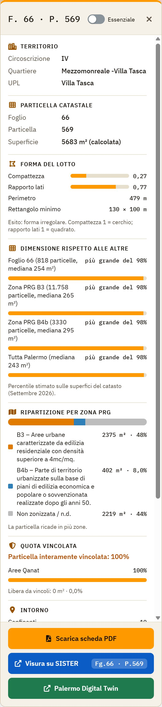
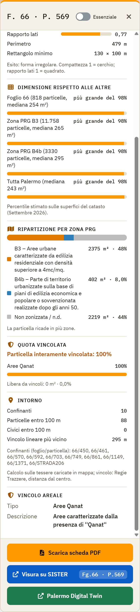
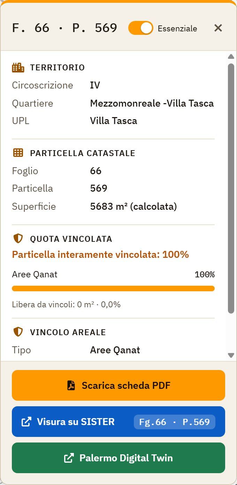
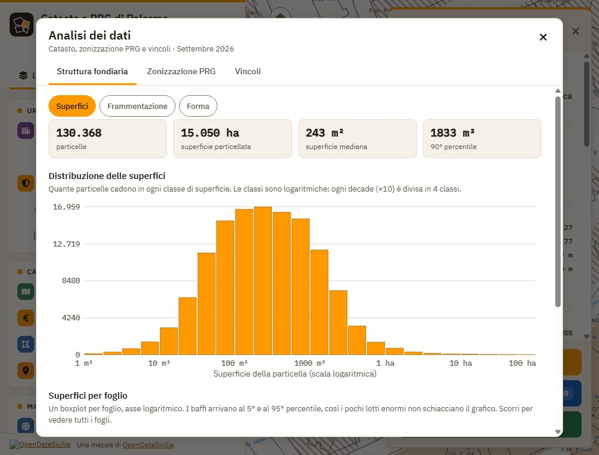
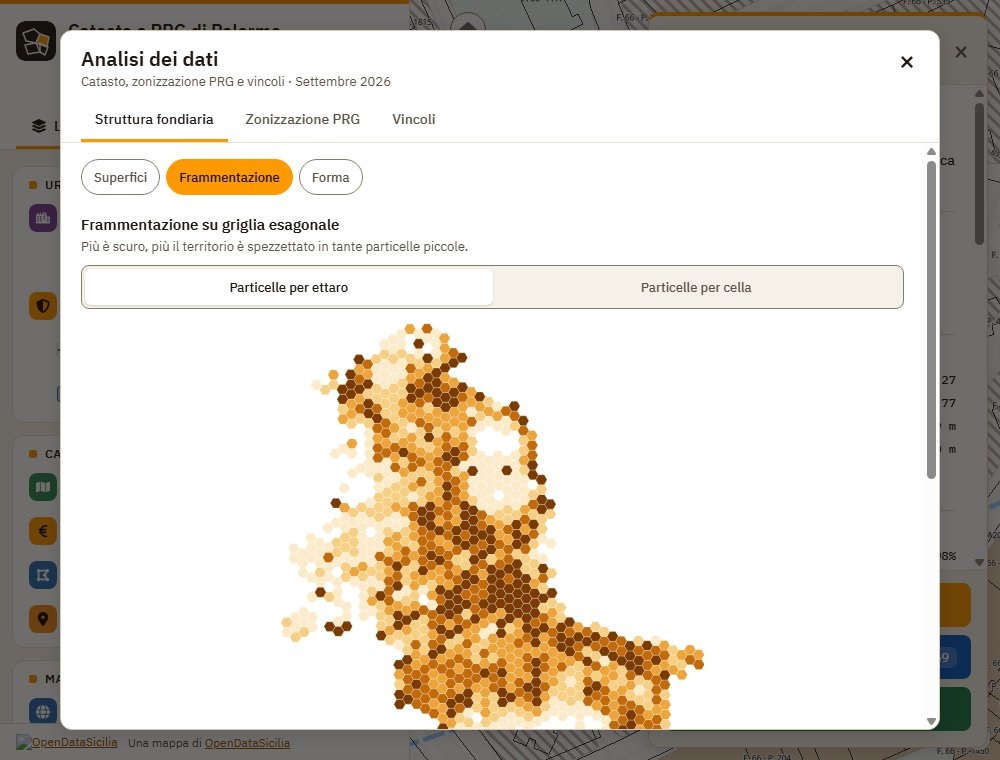
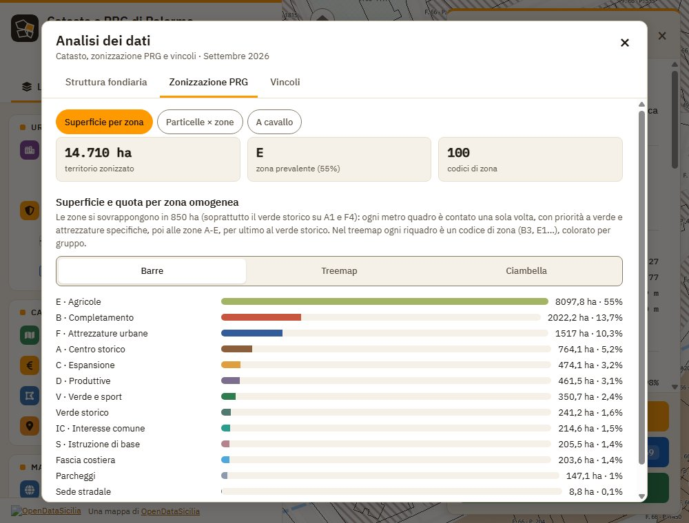
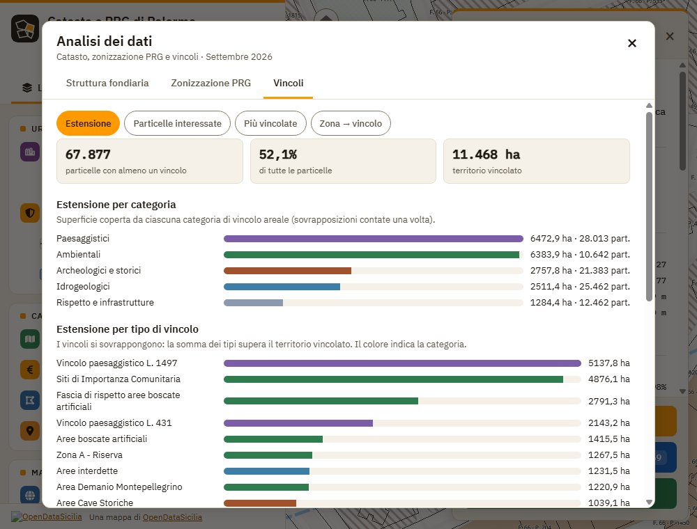

Guida
La mappa mostra particelle catastali, zonizzazione e vincoli del PRG, zone OMI e numeri civici di Palermo.
Muoversi
 Vista iniziale: pannello a sinistra, controlli della mappa a destra
Vista iniziale: pannello a sinistra, controlli della mappa a destra
- Trascina per spostarti; rotellina o pizzico per lo zoom.
- I pulsanti a destra: + e − per lo zoom, vista iniziale, la tua posizione, schermo intero e minimappa con foto aerea.
- Le etichette F. foglio · P. particella compaiono con lo zoom avanzato.
Da tastiera (clicca prima sulla mappa, o raggiungila con Tab):
- ← → ↑ ↓ spostano la mappa; con Maiusc lo spostamento è più ampio.
- + e − ingrandiscono e riducono; con Maiusc lo zoom è doppio.
- Tab passa da un controllo al successivo, Invio o Spazio lo attivano, Esc chiude schede e finestre.
Livelli
 Il tab Livelli con la legenda del PRG aperta
Il tab Livelli con la legenda del PRG aperta
- Il tab Livelli accende e spegne ogni livello. Il piccolo campione a destra del nome mostra il colore in mappa.
- Le mappe di base si scelgono una alla volta: Mappa, Foto aerea, Carta tecnica 2k.
- Se vedi da zoom 14 accanto a un livello, avvicinati per vederlo.
- La legenda del PRG si apre dal link sotto Zonizzazione.
- Attivare o disattivare: apri il tab Livelli e tocca il nome del livello (o l'interruttore accanto). Da tastiera: Tab fino al livello, poi Spazio. Il livello compare o sparisce subito dalla mappa.
 Zone OMI e numeri civici accesi insieme alla zonizzazione
Zone OMI e numeri civici accesi insieme alla zonizzazione
Informazioni su un punto
 Un clic sulla mappa apre la scheda con particella, piano e quotazioni OMI
Un clic sulla mappa apre la scheda con particella, piano e quotazioni OMI
Clicca o tocca la mappa: la scheda riporta particella, strumento urbanistico, vincoli, zona OMI e civico, più alcune analisi (forma, dimensione, intorno: vedi sotto). Visura su SISTER apre il servizio dell'Agenzia delle Entrate (serve l'accesso a SISTER).
Leggere la scheda della particella
Oltre ai dati catastali, la scheda calcola alcune analisi sulla particella. Scorri la scheda verso il basso: ogni blocco ha un titolo e, dove serve, una barra da leggere così.

La scheda completa: forma, dimensione, zone PRG e vincoli
- Forma del lotto: compattezza e rapporto lati sono numeri da 0 a 1. Più la barra è piena, più il lotto è regolare; vicino a 0 il lotto è stretto, lungo o frastagliato. Sotto trovi perimetro, rettangolo minimo e un giudizio a parole.
- Dimensione rispetto alle altre: più grande del 98% significa che 98 particelle su 100 (nel foglio, nella zona PRG, nella zona OMI o in tutta Palermo) sono più piccole della tua. La barra arancione mostra lo stesso valore.
- Ripartizione per zona PRG: la barra colorata divide la particella tra le zone del piano; ogni colore ha il suo m² e la sua percentuale. Il grigio è la parte non zonizzata.
- Quota vincolata: dice quanta parte della particella è coperta da vincoli, tipo per tipo. Libera da vincoli è la parte restante.
- Intorno: confinanti, quante particelle e quanti civici ci sono entro 100 m, distanza dal vincolo lineare più vicino.
- Quotazioni OMI: ogni zona ha una barra per la vendita (€/m²) e una per l'affitto: la barra copre l'intervallo minimo–massimo. La percentuale è il rendimento lordo stimato (affitto annuo diviso valore).

Scorrendo la scheda: Intorno e vincolo areale
Semplificare la scheda
Troppi dettagli? In alto a destra nella scheda c'è l'interruttore Essenziale.
- Clicca una particella sulla mappa: si apre la scheda.
- Attiva Essenziale (diventa arancione; da tastiera: Tab e Spazio).
- Restano i dati di base: territorio, particella, vincoli e quotazioni. Spariscono forma, confronto delle dimensioni, ripartizione per zona, intorno e grafici OMI.
- Per rivedere tutto, disattiva l'interruttore. La scelta resta salvata nel browser e vale anche per le schede successive.

La scheda con Essenziale attivo: solo i dati di base
Cercare
 Il tab Cerca: foglio e particella, oppure via e civico
Il tab Cerca: foglio e particella, oppure via e civico
- Apri Cerca e scegli Foglio / particella oppure Via / civico (la via ha il suggerimento automatico).
- Per foglio e particella la mappa si sposta da sola sul punto giusto; per la via serve che i civici siano caricati.
 La particella trovata viene evidenziata e la scheda si apre con i pulsanti PDF e SISTER
La particella trovata viene evidenziata e la scheda si apre con i pulsanti PDF e SISTER
Scheda PDF
Dopo una ricerca o un clic su una particella, Scarica scheda PDF crea un documento con mappa, dati catastali, zonizzazione e vincoli. Funziona anche su smartphone in verticale.
- Cerca una particella, oppure cliccala sulla mappa.
- Nella scheda (o nel tab Cerca) premi Scarica scheda PDF.
- Attendi qualche secondo: il file si scarica da solo. Aprilo e stampalo con Ctrl+P (A4).
Analisi dei dati
Il pulsante con le colonne tra i controlli a destra apre una finestra con i grafici su tutte le particelle di Palermo (non solo quella scelta). In alto ci sono tre schede e, sotto ognuna, dei sottomenu a pulsanti. Chiudi con × o Esc.
Struttura fondiaria

Superfici: istogramma delle dimensioni delle particelle
- Istogramma: ogni colonna è una classe di superficie, l'altezza dice quante particelle ci cadono. L'asse orizzontale è logaritmico: ogni tacca vale dieci volte la precedente (1 m², 10, 100…). Passa o tocca una colonna per il numero esatto.
- Boxplot per foglio: la riga va dal 5° al 95° percentile, il riquadro dal 25° al 75°, il tratto è la mediana (metà delle particelle è più piccola, metà più grande).
- Frammentazione: mappa a esagoni; più è scuro, più il territorio è spezzettato in tante piccole particelle. Il selettore passa da particelle per ettaro a per cella.
- Forma: compattezza da 0 a 1 (1 = cerchio, 0,79 = quadrato). Le tabelle elencano i lotti più irregolari: cliccane uno per vederlo in mappa.

Frammentazione su griglia esagonale
Zonizzazione PRG

Superficie per zona omogenea, con il selettore Barre, Treemap, Ciambella
- Barre, Treemap, Ciambella sono tre modi di vedere gli stessi numeri: la lunghezza della barra, l'area del riquadro o la fetta della ciambella è proporzionale all'estensione della zona.
- Particelle × zone: quante particelle cadono in una, due o più zone, e una matrice: le celle più scure indicano gruppi di zone che si incontrano spesso nella stessa particella.
- A cavallo: le particelle divise tra più zone.
Vincoli

Estensione dei vincoli per categoria e per tipo
- Le barre sono colorate per categoria (paesaggistici, ambientali, archeologici…). I vincoli si sovrappongono, quindi la somma dei tipi supera il territorio vincolato.
- Particelle interessate e Più vincolate: quante e quali particelle hanno più vincoli. Zona → vincolo incrocia zone PRG e vincoli.
Conteggi e percentuali si riferiscono ai dati catastali di Settembre 2026. Sui grafici, passa o tocca un elemento per leggere il valore esatto.
Minimappa con foto aerea
 La minimappa in basso segue il centro della mappa principale
La minimappa in basso segue il centro della mappa principale
Il pulsante con il satellite tra i controlli a destra apre una piccola mappa con la foto aerea, centrata sul mirino. Chiudila con ×. Per coprire tutta la mappa scegli Foto aerea tra le mappe di base.
Tema chiaro e scuro
Il pulsante con la luna (o il sole) tra i controlli a destra cambia il tema di pannelli e mappa di base. La scelta resta salvata nel browser.
Condividere
L'indirizzo del browser conserva posizione, zoom, livelli attivi e ultima particella cercata o toccata: copialo e invialo, chi lo apre vede la stessa mappa. Il pulsante Condividi tra i controlli a destra lo copia (o apre la condivisione del telefono), anche quando l'app è incorporata nella pagina di PalermoHub.